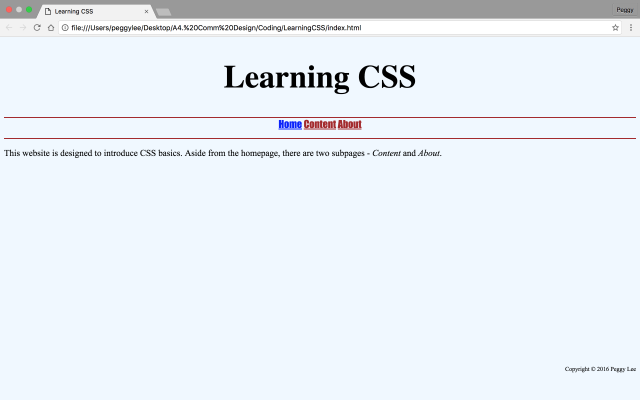

Week 6 (updated on 10/3)
Believe it or not, I didn’t stop coding on typhoon days!
Spending a total of ten hours of my holidays, I completed 90% of my first Communication Design project. Unlike others, I did not have the habit of drawing sketches or diagrams beforehand. Strangely, my ideas show up at various times, such as when I was eating or showering.
The key to success in setting up a website is to have passion and to accept negative feedbacks. One of my classmates told me that spacing on the homepage made reading very difficult. Guess what, after being modified, my website impressed twice as many people than before.
Until the due date of this project, I will continue editing to ensure perfection. I look forward to high viewing rates and more positive comments.
Week 7 (updated on 10/9)
We had the whole week to work on our project. I was glad that my work impressed Mr. Fig. His words, "you don’t need to take this class anymore", reassured me that Computer Science would be the right field for me.
As stated in the previous entry, I like to get feedbacks from a variety of people. Because websites are universal, thinking from different perspectives is crucial. After communicating with my instructor, I modified the Recent Updates by adding a "click for more" link. Indeed, it made navigation easier.
In addition, I completed all of HTML &CSS on Codecademy. Most of the later units were a piece of cake, since I had done a lot of research on them when coding up my website. What seemed unfamiliar were the first-child and nth-child selectors. Hope we can go over those with detail in class.
Week 8 (updated on 10/16)
This week, Mr. Fig stuffed our brain with some CSS basic elements, such as selectors, pseudo-selectors, properties, and values. Programmers use selectors to "select" the elements that they want to style. They apply pseudo-selectors to style an element differently when the user hovers or visits. Examples of properties are text-align, font-family, and font-size. How values are written depends on their corresponding properties. We also styled links within the navigation bar and the footer using nav a{/*property*/} and footer a{/*property*/}, respectively.
After the lecture, I became more familiar with the process of linking CSS to HTML. There are two ways. We can either code all CSS stylings in the <style> of an HTML document, or link an external stylesheet using the following code: <link rel="stylesheet" type="text/css" href="stylesheets/stylesheet.css"/>. The former is useful when there is only one page. However, if the website contains multiple subpages, it will be more convenient to apply the latter.
In addition to the LearningCSS website, we also worked on our portfolio. We were told to follow instructions on the Washington Web Design and Development packet. Although it seemed boring, it helped strengthen our CSS and HTML foundations.
All in all, it was a successful week. I look forward to further CSS lectures and assignments.

Week 9 (updated on 10/23)
Guess what, this is the last (and also the busiest) week of Quarter 1! Mr. Fig continued to lecture on CSS while we worked on our LearningCSS website. We learnt about margins, borders, and paddings. The attached image clearly explains what they are and how they are different.
On Friday, we evaluated one another’s journal project using the rubric we came up with at the beginning of the semester. It was a valuable opportunity for us to learn about different designs and structures. Of which, I was impressed by the idea of adding a news ticker and a link to social media accounts on the homepage. They seem really cool and unique.
After looking through my classmates’ websites, I did some self-reflection. I noticed that some components of my website were misplaced when it is displayed on the school’s computer. I was quite upset about it. My goal for the upcoming week is to fix the problem without screwing anything up. Before then, I have to do a deeper research on pixels and percentages.

Week 10 (updated on 10/30)
We spent the week finishing our Unit 3 Portfolio. Because it was the last assignment for Quarter 1, I aimed to get a perfect score on it (and I did ;). Aside from completing all lessons and modules, I wrote a few paragraphs summarizing what I learnt.
“The focus of this unit is to format web pages using CSS. In CSS, there are five font-families: serif, sans-serif, cursive, fantasy, and monospace... We are also introduced to various font properties: font-size, font-style, font-weight, line-height, text-align, letter-spacing, and text-shadow... Later in the unit, we learnt about padding and margin.”
On Thursday, grades and comments for our journal project were out. I felt satisfied and was in a good mood for the rest of the day.
{kind=link}
{kind=link}
{kind=link}